来源：https://nt29oth9w1.feishu.cn/docx/UxijdXqjdo534cxOAibczDESnpf
大家好，我是梦宸，目前我还是一名大一学生，河北廊坊人，现在在天津上大学
在我眼里，我只相信岁月和沉淀的力量
前几天我发布了一篇我从13岁到20岁的7年创业经历，相信很多小伙伴看了之后热血沸腾，想要趁还年轻大干一番事业，那么项目是不可缺少的一部分
如果你也想要了解我7年创业经历的可以看这篇文章，我相信看完你一定有所收获
放弃高考，选择创业冒险，如今20岁月入6位数：我13岁到20岁的七年创业之旅
我在今年主要做拼多多短视频带货，单个账号3个月的时间拿到了4.6w的结果，并且跑通了整个项目闭环，这个项目非常适合新手小白去操作上手
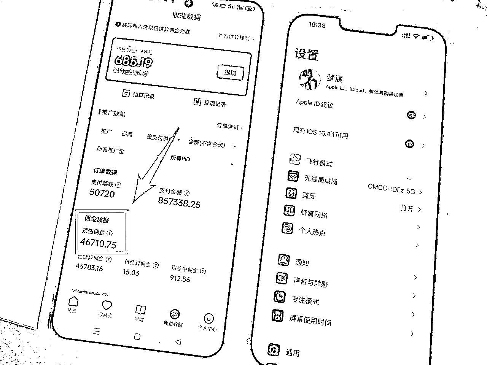
今天我给大家出一期关于拼多多短视频带货的保姆级教程，手把手带你玩转拼多多
在去年，也就是2022年的1月份，当时我是高三的寒假，就在寒假就已经确定自己放弃参加高考，打算走单招上专科，毕竟我的成绩不太好。
我有一个小小的习惯，就是但凡在抖音，快手，小红书等等平台，遇到视频或直播有往私域上引流的，或者主页有联系方式的，我都会拿一个单独的微信号上去加，并且这个微信号的名字不跟业务号相同，就让别人感觉这个微信号就是一个客户
加过来的目的就是为了看看他们在做什么项目，以及看看他们的朋友圈，了解最近市面上有哪些项目，等我要转型的时候，我就能很快分辨出哪些项目处于蓝海，哪些项目属于红海
当然了，我发现拼多多短视频带货这个项目也是通过这个微信号的朋友圈看到的，当时拼多多短视频带货也是刚刚出来，我的执行力也是比较强，看到这个项目就毫不犹豫直接开干
梦宸小课堂：
其实我这个单独的微信号还有一个目的，就是把他们当做工具人
因为我当时就在做知识付费（做的影视解说）我的未成交的客户问我一些刁钻的难以答复的问题，我都会把这个问题甩给他们，他们给我的回答以及加上我自己的思考就是我要回复客户的答案
拼多多短视频带货已经被很多人忽视掉了，哪怕现在很多人都不知道有这个项目的存在
优势：
1.拼多多本身就是一个电商平台，吸引的自然而然都是购物粉，在一定程度上更容易出单
2.据大数据分析，多多视频2022年年底到2023年年初的日活跃用户高达1.5亿，已超过小红书，并且用户时长比肩视频号，拼多多目前的用户以三四五线城市，中老年女性居多，三四五线城市才是中国重要的人群聚集地
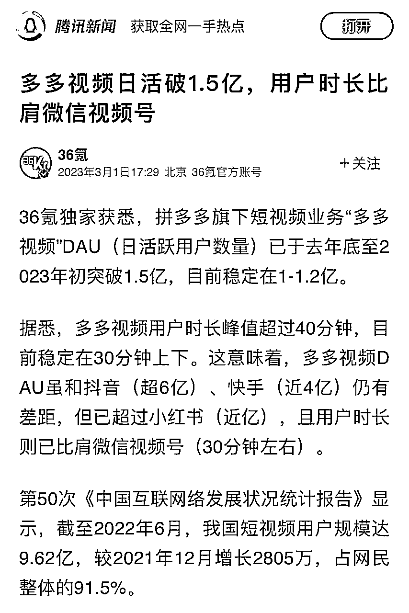
3.张琦老师讲解拼多多的崛起中，提到了拼多多干了一件大事，就是把不会上网的人都搞会上网了（指的是老年人）拼多多的横空出世把可以上网的人都搞上网了，拼多多的重度用户就是我们父母那帮人，说白了就是喜欢买便宜的商品，喜欢贪点小便宜
如果你想要批量起号的话，一个手机号可以注册7个拼多多账号（手机号可以注册1个，QQ号可以注册5个，微信号可以注册1个）
如果你的账号在拼多多上买过东西，并且注册时间超过半年以上那就是老账号。老账号的养号方法就是直接打开多多视频去刷视频，模仿正常用户操作，看到喜欢的停留点赞评论一下，看到带货视频完全看完。养号大概3-5天就可以正常使用
新注册的账号，先去拼多多平台上购买几件商品，随便买什么都可以。然后再按照老号的养号方法
拼多多短视频带货是非常容易做矩阵的，因为不需要实名，没有粉丝要求，更不用交保证金，需要注意一点的是，不能在一台设备上来回切换账号。
但是如果你的手机可以开系统自带的拼多多APP分身的话是可以使用的，这一个我自己亲自试验过
(目前小米，红米手机都能开拼多多分身；OPPO，vivo部分手机可以开分身；苹果，华为，三星不能开分身）
批量起号必须全程4G/5G流量，不可以连接WiFi
拼多多短视频的带货门槛已经很低了，不需要1000粉丝，不需要开橱窗，不需要交保证金，甚至都不需要实名认证，这也很好的可以去做矩阵，但是需要我们拿到带货奖励资格
那么带货奖励资格有什么用呢？
就是只有拿到带货奖励资格之后，你出单了才会给你结算佣金，你没有带货奖励资格的话，你无论出多少单，都不会给你去结算佣金的，所以做拼多多短视频带货的第一步就是去拿到带货奖励资格
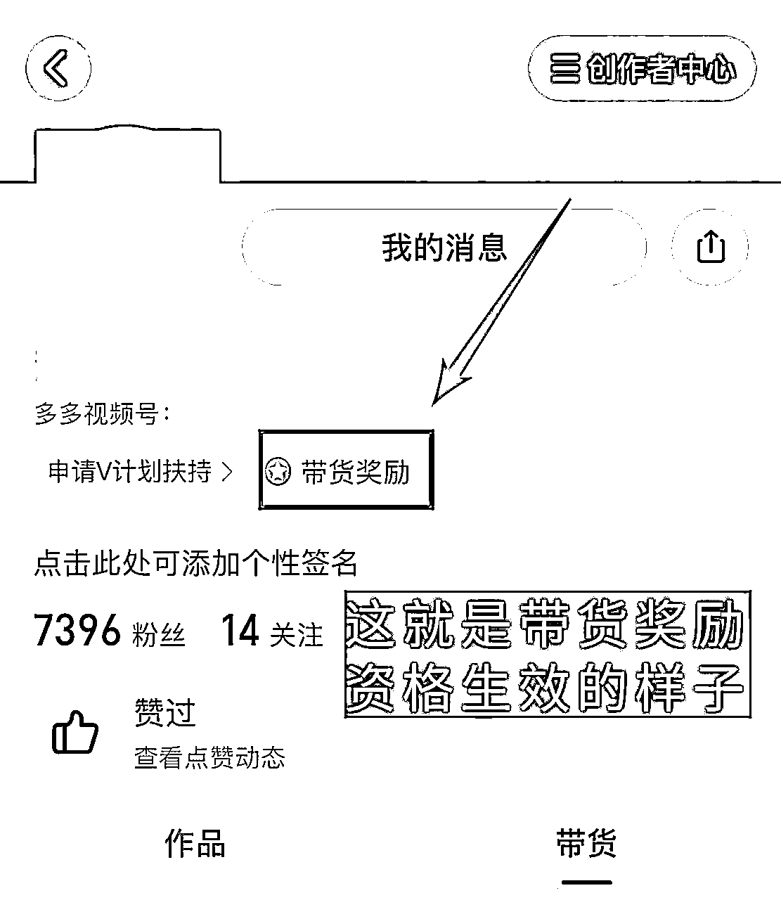
多多进宝是一个APP，是用来查看收益，查看订单详情以及提现用的
应用商店可以直接下载，下载完之后用手机上注册登录即可
首先就先将拼多多和多多进宝绑定到一起
文字版具体步骤：
发布---随便点击一条视频（这个视频并不是真的要去上传，而是为了跳转一下绑定的链接）---点击带货---带货赚钱---蓝色字体立即获取---输入刚才注册多多进宝的手机号登录---确认授权---立即绑定
图片版具体步骤如图所示：
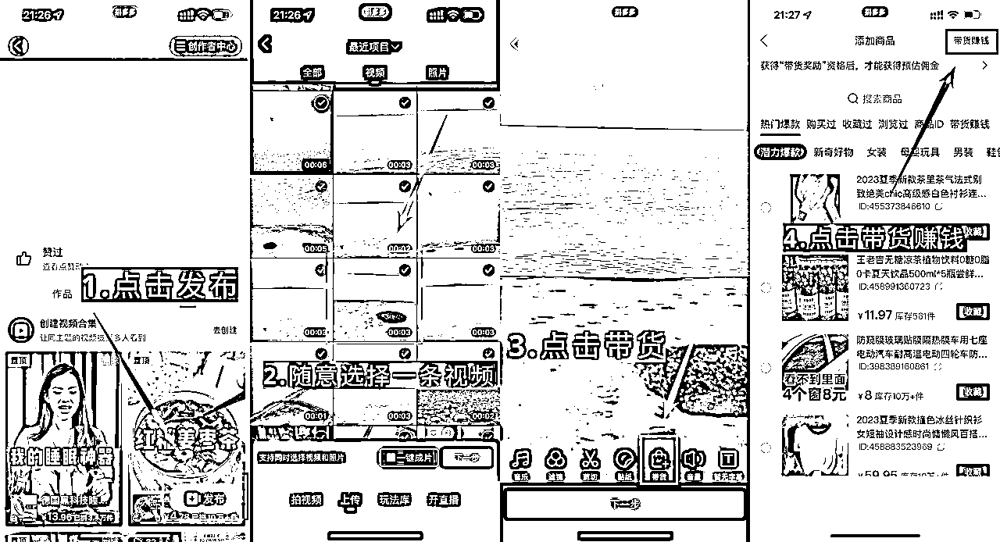
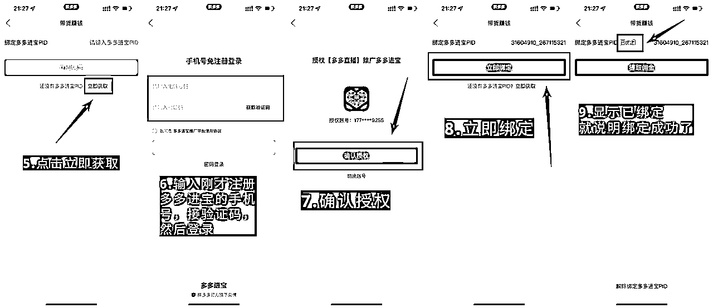
这50条热门爆款是有时间限制的，必须要在每个月的1-25号之间审核通过50条热门爆款，然后次月才会正式生效带货奖励资格
这里指的热门爆款的意思并不是说你的视频上了热门或者有了多少播放量才算热门爆款，这里的热门爆款跟你的播放量是没有任何关系的
在多多视频里面有一个热门爆款商品合集，选品的时候必须要在这个热门爆款商品合集里面选品，这样才算作一个热门爆款
热门爆款商品合集的入口在哪里呢？
右上角创作者中心---带货视频中心---去发布---进入的这个页面就是热门爆款商品合集
具体操作方法如图所示
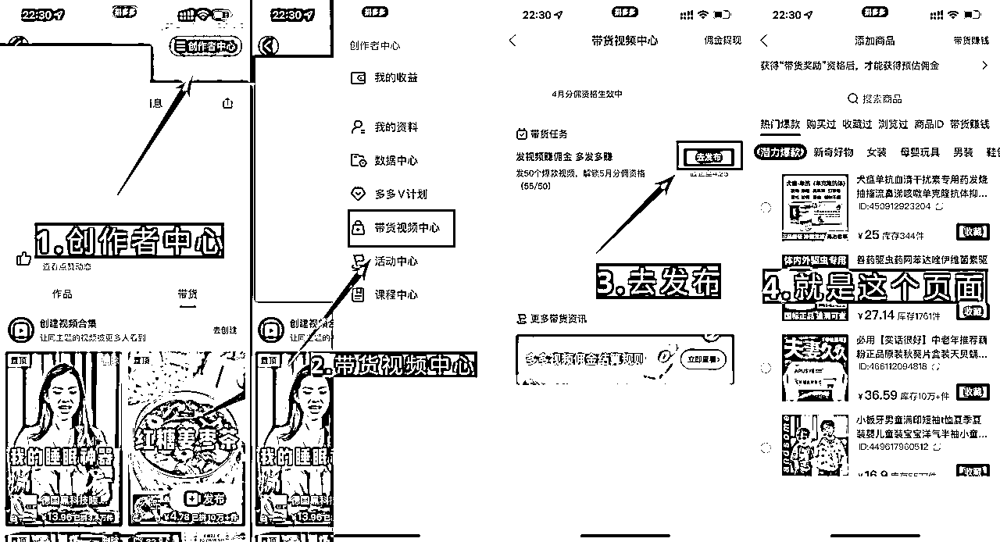
并不是在这里面随便选品就能通过的，它是有审核的，所以必须要学会选热门爆款的商品，审核的通过率才会高（等下下面也会具体的教大家如何选品）
大家进入到热门爆款商品合集以后，不要选择页面里已经给你的类目里面的商品
这里面的商品的热门爆款的通过率是非常低的，并且还不容易找视频（不要问为什么？因为这是我实战之后的经验）
那么怎么发通过率比较高呢？我的答案：是利用好上面的搜索栏去搜索商品
搜索的时候要注意，一定不要搜索大的类目，比如电器，这就属于大类目，咱们可以选择搜索电水壶，大类目里面的小产品
还要注意不要搜索吃的东西，比如苹果，薯片等等，现在吃的东西的商品通过率几乎为零
有人会问了，你是怎么知道的？这是我经过不断测试得到的结果
那么我们要搜索什么呢？搜索冷门产品，越冷门通过率越高，比如铁丝网，五金等等，具体搜索什么关键词，需要动动你的灵活的大脑去想
搜索完之后，一定要记得点击热门爆款，因为咱们发的是热门爆款
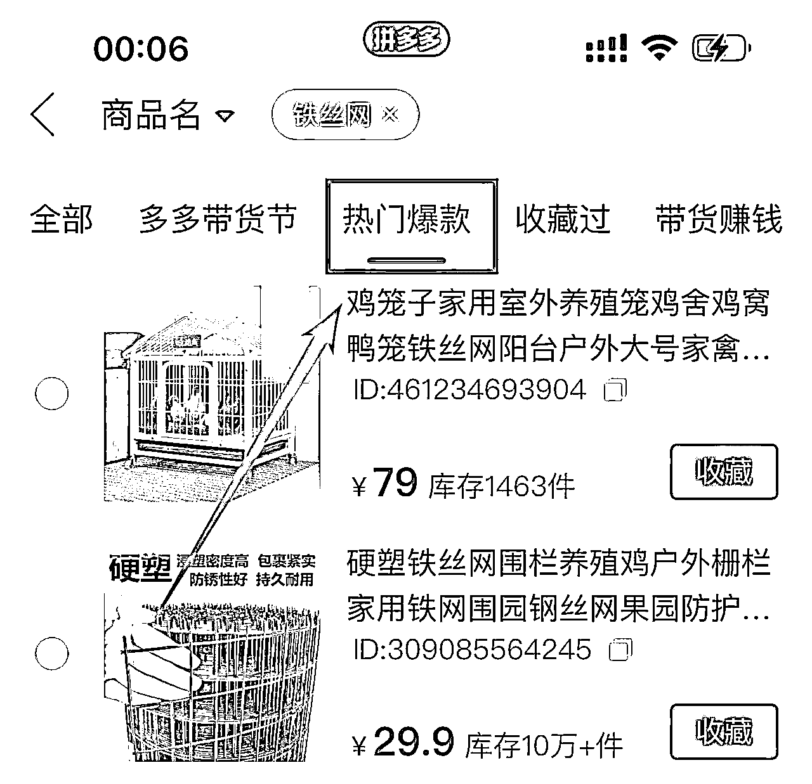
搜索完你想要的产品之后还需要注意两点细节
1.该商品是否支持短视频
既然咱们是做的短视频带货，如果他都不支持短视频，咱们也没有办法去带他对吧
怎么看呢？点击商品图片前面的小圆圈，可以打上红色小对勾就说明支持短视频，如果不支持的话会提示的
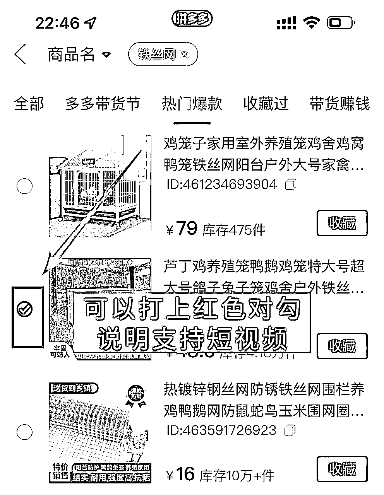
2.注意库存
选择的时候一定要选择库存数量1w以上的，如果说库存数量比较少的话，商家一旦把商品卖完，不能及时补库存，你的热门爆款的数量就会掉下来一个
为了避免热门爆款的数量不会减少，建议大家选品的时候看清楚库存
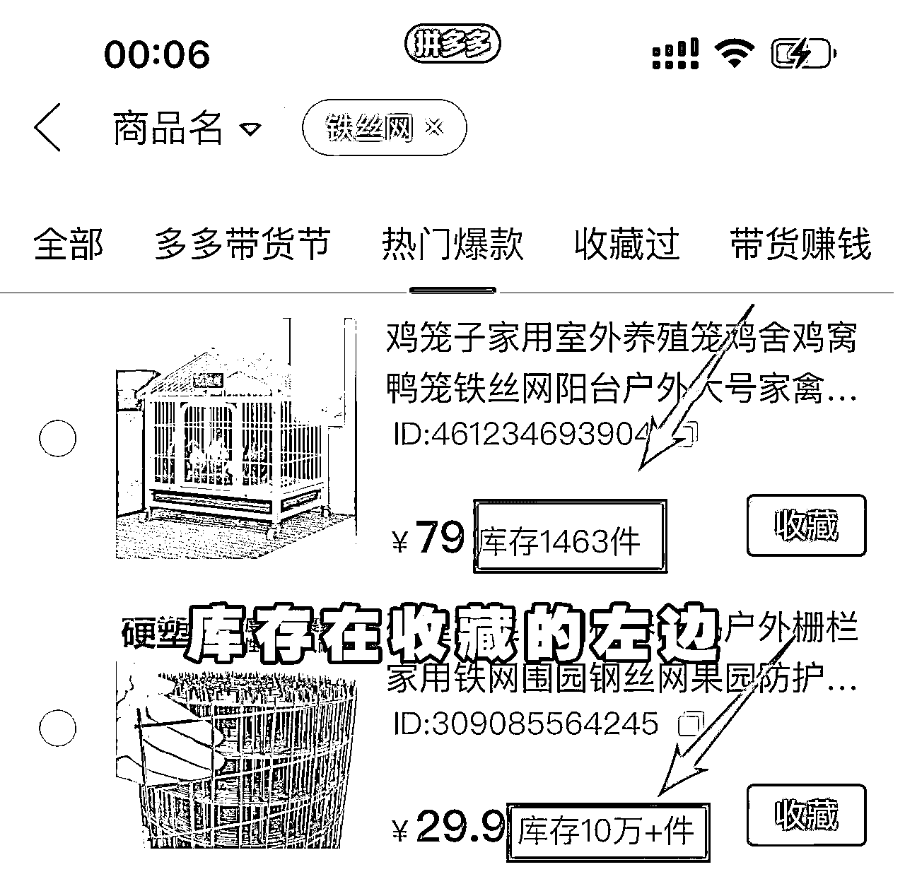
选好品之后，一定要记得点击收藏，收藏的目的就是为了能快速找到已经选好的商品
热门爆款对视频质量的要求很低很低，哪怕是垃圾视频都会审核通过（前提视频符合平台要求，不违规，还是我测试的结果）热门爆款主要看的是你的选品，跟视频的关系很小
而且咱们发热门爆款的目的不是为了出单，而是为了拿带货奖励资格，所以怎么方便，怎么发速度快怎么来，即使出单了也不会结算佣金，因为你没有带货奖励资格
我教给大家一个快速寻找视频的方法，首先你要复制拼多多商品的标题，然后到抖音上去搜索这个标题，去寻找视频，还是那句话，视频的质量不重要，但是要满足我以下几点要求
1.视频时长要15s以上（本人亲自测试过15s以下的视频，100%不会审核通过）
2.视频中展示的商品必须和拼多多中的商品一致，包装，品牌都要一模一样
3.视频中不能提到“点爱心”（多多视频里面没有点爱心，只有点赞）
4.视频中不能提到“到左下角小黄车下单”（多多视频里面不叫小黄车，叫小红盒）
二次加工的目的大家应该都知道，是为了防止同质化，为了避免一些小白不懂，我也来手把手教给大家，手机上用剪映就可以了
1.添加画中画
画中画---新增画中画---随便选择一张照片---把照片拉满整个视频---混合模式---透明度调到0-4之间---把画中画图片拉长到跟原来视频一样的长度
（具体步骤如图所示）
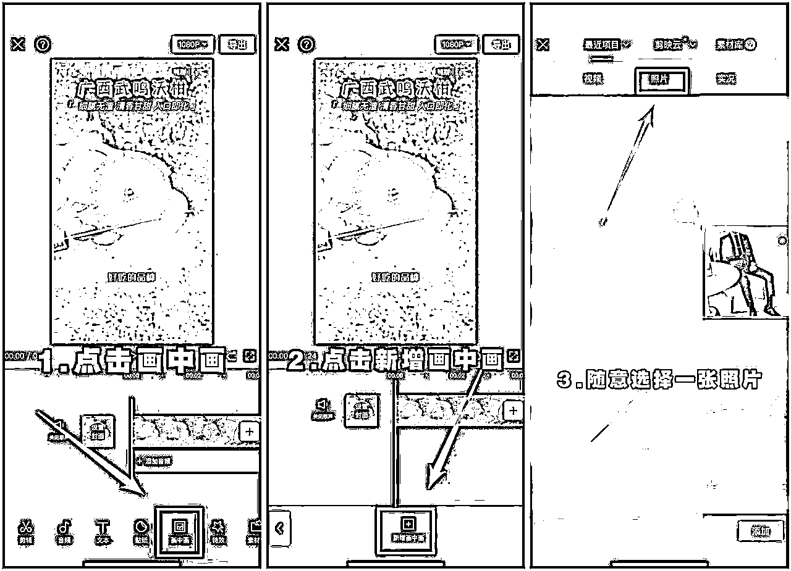
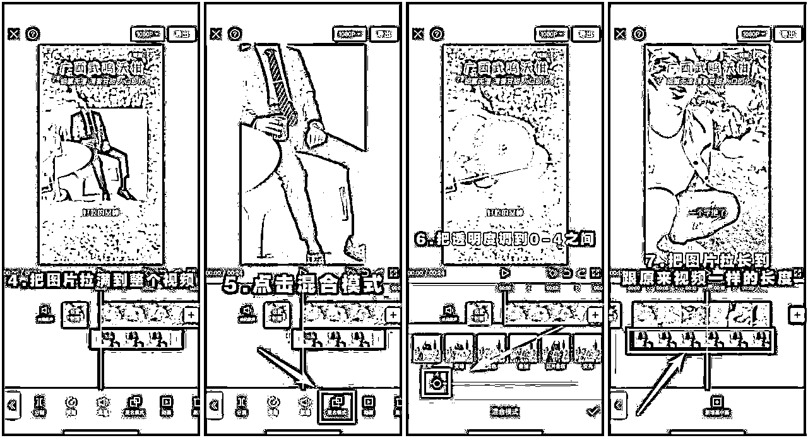
2.调色
调节---亮度10 对比度15 饱和度7 锐化30（根据视频可自行变化数值）---把调节拉长到跟原来视频一样的长度
（具体步骤如图所示）
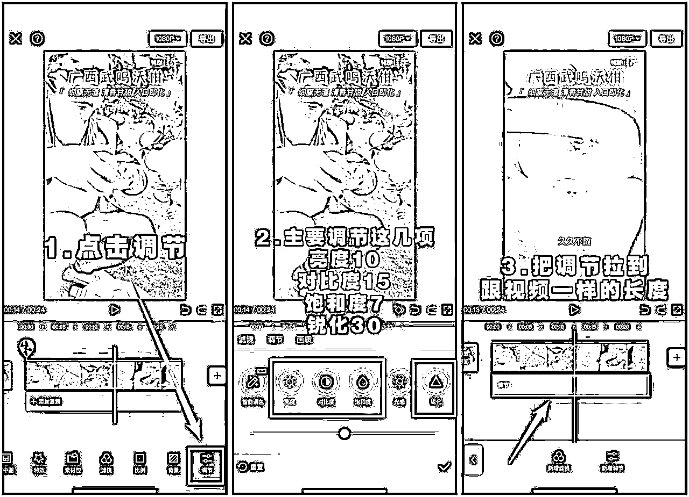
只用做这两个步骤简单加工一下，直接导出就可以啦
大家记住一点，热门爆款的选品方法跟拿到带货奖励之后的选品方式是完全不同的
那么拿到带货奖励资格之后如何选品呢？
比如最近的母亲节，还有后面即将到来的520，端午节。都是咱们要注意的选品对象
因此我给大家列了一个表格关于什么节日可以卖什么商品（可能不是特别全，自行补充）
在去年疫情宣布结束的时候，我的一位小伙伴靠卖次氯酸消毒液一条视频三天变现11w
所以可以见得蹭热度选品是非常重要的
在拼多多里面判断商品的热度无非就是两点
第一:已拼人数
已拼人数越高代表着销量越高
咱们选择已拼人数尽量选择10w+的商品，但是还需要注意一点
一定要去看评论数量，如果评论数量很少，低于1w，那么也不要选这个品了，很有可能这是靠刷单刷上去的
已拼人数跟评论的比例大概是10：1左右，比如这个品就完全符合咱们的要求
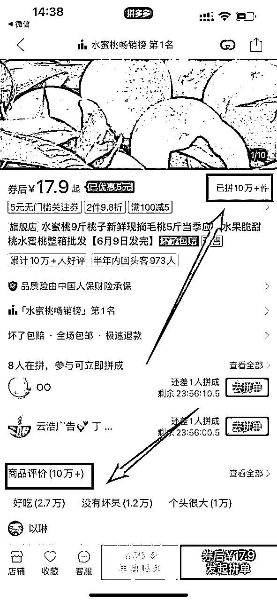
第二：在拼人数
在拼代表着产品的热度，在拼人数越高说明产品的热度越大
我们在选择在拼人数尽量选择50人以上的，当然越高越好
如果碰见非常高的在拼人数，可以适当的多去怼上几条视频来增加爆单的可能性，下面这个品的在拼人数就属于比较高的了
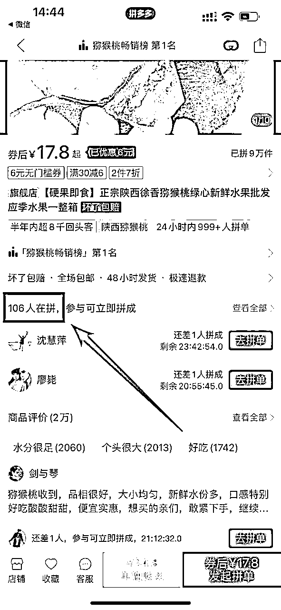
这是什么意思呢？就是看这个店铺是不是专业的卖家，看这个店铺是不是只卖一种类型的产品
如果这个店铺杂七杂八的什么都卖的话，就说明不是专业卖家，就不要选择这种店铺，看下面这个图片，这种就是专业卖家
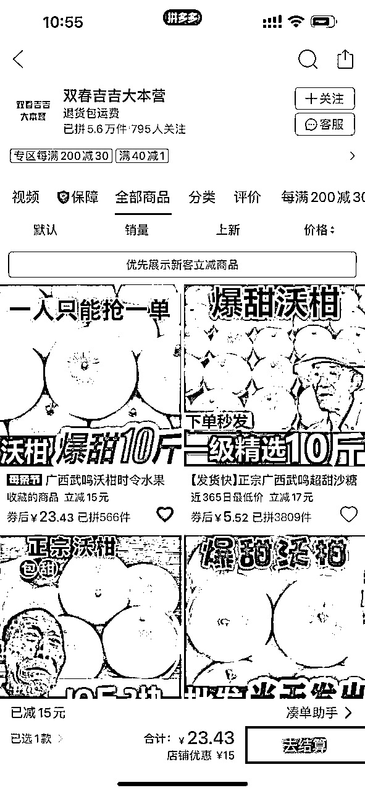
注意：经过我的大量测试发现，店铺中只有一个链接的更容易出单哦
就是看商品主页展示的商品图片是不是带有夸张性的字体
比如“骗人是王八，买一斤发十斤”，“土豪专享果，爆甜10斤”
带有这种图片的是非常容易出单的哦
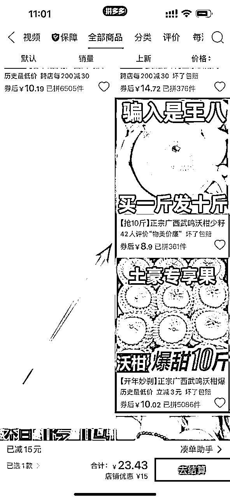
找素材的通用手段，复制拼多多商品的标题，到抖音，快手上搜索
符合优质内容的视频：1.高清 2.全屏 3.有介绍，有讲解，有内容
给大家看一个符合要求的视频案例
不能选择的视频：
1.横屏视频（16：9）
在拼多多短视频里面，横屏视频是不被官方识别的，跟其他平台不一样，所以大家切记
2.广告类型视频（直接看案例大家就明白了）
3.纯音乐视频
视频中只有音乐，没有任何解说，这是不可以的，用户是不喜欢这种类型的视频的
4.图片组合视频
就是视频中图片轮转的，这种视频可以说是质量最差的了
选择视频要符合拼多多平台规则：
1.视频时长要15s以上（本人亲自测试过15s以下的视频，100%不会审核通过）
2.视频中展示的商品必须和拼多多中的商品一致，包装，品牌都要一模一样
3.视频中不能提到“点爱心”（多多视频里面没有点爱心，只有点赞）
4.视频中不能提到“到左下角小黄车下单”（多多视频里面不叫小黄车，叫小红盒）
1.做拼多多短视频带货之前一定要先拿到带货奖励资格再去带货
2.拼多多短视频带货属于爆发项目，需要怼量，量大出奇迹
3.热门爆款的视频内容真的不重要，重要在于选品，只要视频符合平台规则，选品选对了，哪怕视频质量再差也算热门爆款的数量
4.必须在每个月1-25号之间发满50条热门爆款才能获得带货奖励资格，其他时间段不可以
5.拿到带货奖励资格之后的选品主要从这几个维度出发：蹭节日、事实热度；蹭商品热度；看店铺状态；看商品头图
希望大家都可以在拼多多短视频带货上面拿到满意的成绩